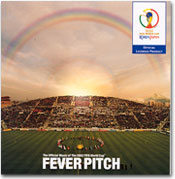

|

ついに始まったワールドカップ！「原稿書けないでしょう？」という心配とも同情ともとれる催促に、「書けないよ〜！」と浮かれた返事をくり返し、テレビに釘付けの毎日が続く。サッカー好きにはたまらない、なんとも贅沢な至福の1ヶ月なのだ。これに音楽大好きが重なって、目も耳もあっちもこっちもで、もう楽しくてしようがない。開幕から1週間、その間に聴こえてきた音を振り返る。
■サポーターの音
〈合唱〉大合唱は気持ちがいい。スタジアムに響き渡る、よくそろった太く力強い声。どの国のサポーターもありったけの声援を送る。中でもアイルランド、イングランド、ドイツなどは「さすが！」であり、うらやましく思う。6月2日、埼玉スタジアムでのイングランド―スウェーデン戦。キックオフに合わせて大合唱が始まり、その後も要所要所でいろいろな歌を歌い続ける。前半20分、ベッカムのコーナーキックをキャンベルがヘッドで合わせてゴ〜〜〜ル！！！その直後からまた歌う、歌う。客席後方に陣取った小人数のブラスバンドが「大脱走のテーマ」を演奏する。ピンチになればお決まりの「ルール・ブリタニア！」「ゴッド・セイヴ・ザ・クィーン」。後半、アレクサンデションの同点ゴールでスウェーデン・サポーターは歓喜のコール。結果は引き分けだったが、歌の迫力ではイングランドが圧倒していた。
6月5日、カシマでのドイツ―アイルランド戦。終了直前ロスタイムでのロビー・キーンの劇的同点ゴールが印象に残る試合だ。最後の最後まで息詰る熱戦をさらに熱くしたのが、スタジアムに始終響き渡った大合唱、歓声、コールだった。キックオフのとき、アイルランド・サポーターが「ユール・ネヴァー・ウォーク・アローン」を朗々と歌い始めた。よく通る、よくそろった声！こういうゆったりとしたロング・トーンによる曲調がいいのだ。おなかの底から思いっきり声を出して、みんないっしょに気持ちよく歌える。彼らにとっては「いつものこと」で、わたしもよく聴くなじみの曲なのだが、ワールドカップの大舞台でやられると、さすがに震えがきた。この場にいたかったなあと、心の底から思った。どちらのサポーターも、一つ一つのプレイに対する手拍子・歓声が大きく、あたたかい。今ここで何をしたらいいのか、歌う場面か、静かにする場面か、拍手をする場面か。メリハリをちゃんと理解しているすばらしいサポーターの典型だと思った。
その前日、6月4日。埼玉での日本―ベルギー戦。スタジアムは青一色。「ニッポン！」コールと大歓声。鈴木・稲本のゴールにスタジアムは沸いた。2−2の引き分け。惜しかった。そのとき当然「勝ち」を望んだこと以外に、別のことも望んでしまったのは欲張り過ぎだろうか？――「歌」がない。ホームでこれだけのサポーターがいるのに、みんなで歌う「歌」がない。一曲でいい。「歌」を聴きたい。歌いたい。
誰かが歌い出し、少しずつ波紋のようにまわりに伝わって、どんどん広がって、スタジアム全体が揺れるような大合唱に……。そんなことが、なぜ起こらないのか。「島唄」は消滅したのか。（ひょっとして……と思われたアルゼンチン・サポーターによる「島唄」もなかったし。）『アイーダ』の「凱旋行進曲」のテーマがちょっと聞こえたが、それならもっとみんなでガンガン声出して歌えばいいのに……と思った。静かに観戦したい人ばかりだったとは思えないのだが。こういう場面ではこの歌……というような自然発生的に習慣で沸き起こってくる歌がないからだろう。もちろん、国によって応援の仕方はさまざまで、まったく歌わない国もある。手拍子と歓声くらいのシャイな応援も少なくない。イングランドやアイルランドのような歌声を望む方がおかしいのだろうか。たしかに、それはわたしの個人的希望にすぎないのだから。でも、狭いカラオケボックスで仲間内でマイク通して歌うより、大きな空の下で何万人の仲間といっしょに大声出して歌ったほうが、絶対気持ちいいと思うんだけどなあ。
とはいうものの、日本のサポーターズ・ソングとしてふさわしい曲は何だろう？ こんな場面ではこの曲、というふうにいろいろなレパートリーがあるといい。気持ちを高める歌、勇気づける歌、落ち着きをうながす歌……。日本人の声域は男性でも全般に高めなのだろうか？体格のせいなのだろうか？女性が多いからなのだろうか？まだ勉強不足で確かなことはわからないが、日本のサポーターの歌声は、欧州のスタジアムを揺るがす地の底から沸いてくるような太い低音の響きとはどこか違うような気がする。「オ〜レ〜〜オオ〜」「オ〜レ〜オレオレオレ〜」という世界共通のフレーズや、「オ〜〜〜！」という声だけとってみても、そんな気がしてならない。高めの音域が合っているなら、それなりに、みんなで気持ち良く歌える歌はないだろうか？ そういえば、あの「翼をください」も「島唄」も、応援歌として歌われるサビのフレーズは高音域だ。そもそも日本の民謡はたいてい高音域で歌われるし、ふだんの話し声も日本人は高めだと聞く。簡単なおぼえやすいメロディー、歌いやすい音域、いつまでも永く愛せる歌……。いつの日にか、試合の流れの中で、自然にそんな歌の数々がどこからともなく沸いてくるようになればいいなと、ひそかに期待している。
〈打楽器のリズム〉カメルーン、セネガル、ナイジェリアなど、今回出場のブラック・アフリカ諸国のサポーターに共通するのは、さまざまな種類の打楽器によるリズムとそれに合わせたダンスである。歌よりリズム、声よりも太鼓の音をメッセージとして、ピッチの選手たちに届けるのだ。サポーターたちは試合の前から太鼓を打ち鳴らしては踊り、試合中もハーフタイムも、試合のあとも、ずっとそれを続けている。色とりどりの衣装に色とりどりの打楽器。色とりどりの音。乾燥した風土のせいだろうか、アフリカの太鼓の音はカラカラ、テケテケ、トコトコトン！ と軽い乾いた音がする。日本の会場のあちこちで試合前に和太鼓の演奏が披露されるが、その音はずっしりと重く、豊潤でストイック。緩急・強弱の変化に富んだリズムも、多彩な絵画というより墨一色の「書」の世界に見る変幻自由な豊かさに通じているような気がする。その他いろいろな国の独特の楽器とその音色を、身近に見たり聴いたりできるのも、こうした世界規模の祭典の楽しみのひとつである。
■オフィシャル・ソング
今回のワールドカップでも、コリア・ジャパンとインターナショナルそれぞれの公式アルバムが発売された。しかし、だ。ヴァンゲリスの「アンセム」は選手入場はじめ、各テレビ局でもテーマ曲に使っているため、すっかり耳になじんだ感があるが、その他の曲はどうだろう？ ケミストリーらによるヴォイセズ・オヴ・コリア・ジャパンの「レッツ・ゲット・トゥギャザー・ナウ」は、3月中旬に発表されて以来ロング・ヒットを続けているとはいえ、けっして爆発的なヒットには至らなかった。開幕前夜祭と開幕式でのライヴ演奏を通して、韓国で初めて日本語の歌が堂々と歌われた記念すべき曲として永く記憶されるかもしれないとはいえ、98年フランス大会のときのリッキー・マーティン「ラ・コパ・デ・ラ・ヴィダ」（アレ、アレ、アレ〜♪）ほどの浸透力は感じられない。どこへ行っても「アレ、アレ、アレ〜♪」という歌声が聞こえていた前回に比べ、ちょっとパワー不足か。日韓版アルバムのメンバーは、少なくとも日本に限ればトップクラスの人気アーティストの競演で豪華である。でも、なぜか今ひとつ盛り上がっていないように思える。日本のスタジアムで流れていただろうか？ 「アンセム」はハーフタイムにも流れていたが、それ以外の曲は流れていたか？実際にスタジアムに入った人に聞くと、聞かなかった、あるいは覚えていないという。オフィシャル・ソングって、一体何？
インターナショナル版の2曲目「リヴ・フォー・ラヴ・ユナイテッド」を歌っているラヴ・ユナイテッドは、この2002年のワールドカップに出場する世界のサッカー選手たちが総勢45名参加した夢のようなユニットである。ジダンらフランス代表を中心に、フィーゴ、ロベ・カル、トッティ、エムボマ、ベロンなどそうそうたるメンバーだ。CDだけではよくわからないが、ヴィデオ・クリップを見ると、このフレーズを誰が歌っているのか、どんな顔して歌っているのかがわかって楽しい。ミキシング技術のなせる技かどうかしらないが、みんななかなかのシンガーだと思った。実際の試合の国歌斉唱場面では、あれ？ と思うことが多いが……。
ワールドカップはまだまだ続く。この先もどんな音が聞こえてくるだろう？
|